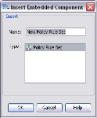

Decision Setters
A Decision Setter defines the decision making process for a record. It processes one or more rules according to the flow and categorisation defined in the Policy Rule Set and then sorts the returned decision/reasons in priority order, supported by one or more explanatory codes to indicate which rules were triggered.
The Decision Setter is comprised of:
- A Default Decision (Optional)
- An associated Decision Set
- An optional Policy Rule Set that contains Policy Rules and a Decision Category flow
A Decision Setter can be identified by the following icon
{kind=link}
Decision Set
A Decision Set contains a number of Decision Categories that have been created for a specific purpose and are listed in priority order. In order for a Default Decision to be assigned to the Decision Setter a Decision Set must be selected, it is one of the Decision Categories contained in this Decision Set that is used as the Default Decision.
A Decision Set can be identified by the following icon , see Decision Set overview for more information.
{kind=link}
Default Decision
A Default Decision can be applied to a record either unconditionally before any rules are evaluated, or as a fallback after the rules have been evaluated in the event that none of the rules are triggered. When a Default Decision is used it ensures that a decision of some sort is always returned.
A Default Decision does not have to be assigned to a Decision Setter. If the user chooses not to have one, then just the Policy Rule Set that has been assigned to the Decision Setter will be executed.
Policy Rule Set
A Policy Rule Set is used to define the decision category flow used in a Decision Setter to ensure that all the required policy rules are processed for each record. At every decision category point in the decision category flow of the Policy Rule Set, one or more policy rules are applied. If one or more conditions contained in the policy rules are true for a record, the text and code describing each condition will be returned and the record will be directed to the next relevant decision category point in the flow.
The Decision Setter uses the priority of each decision category defined in the Policy Rule Set to determine the ranking of the returned decisions. Where multiple rules with equal priority are triggered in a given decision category, they are returned in the order that they are processed. The top ranked decision will be the final decision that is assigned to the record at runtime.
A user can either create a Policy Rule Set that is referenced by the Decision Setter, so it can be shared with other Decision Setters, or the user can create an embedded Policy Rule Set that can only be used within the Decision Setter that it was created.
A Policy Rule Set can be identified by the following icon  , see Policy Rule Set overview for more information.
, see Policy Rule Set overview for more information.
The Decision Setter is comprised of:
- An optional Default Decision that will ensure that a decision of some sort is returned when either the Default or Fallback radio buttons are selected
- An associated Decision Set that contains a number of Decision Categories that have been created for a specific purpose and are listed in priority order
- An optional Policy Rule Set that contains Policy Rules and a Decision Category Flow
The Decision Setter defines the decision making process for a record using these individual components.
A Decision Setter can be created from the Explorer window.
| You will only be able to add a component type that has been allowed for the selected folder. If it is not allowed it will not be listed and therefore cannot be selected. |
To create a Decision Setter
- From the Explorer window right click at the required folder level and select Add component.
- Select Decision Setter.
- In the Create component dialog enter the name of the Decision Setter
- Select the Open new components in component editor check box.
- Click on the OK button.
The Decision Setter Editor will open allowing you to configure the Decision Setter.
The Decision Setter will be listed in the Explorer window under the selected folder level. The component is identified by the icon.
If you do not which the editor to open, keep the check box de-selected. From the Explorer window right click on the Decision Setter and select Open
Once the user has created a Decision Setter the user will need to define it.
To edit a Decision Setter
A Default Decision is applied when processing a Decision Setter either unconditionally before any rules are evaluated, or as a fall back after the rules have been evaluated in the event that none of the rules are triggered. When a Default Decision is used a decision of some sort is always returned.
A Default Decision is made up of a Decision Category and Reason Code. A Default Decision must be assigned to a Decision Setter for the Decision Setter to be valid.
To use the Default Decision Category and Reason Code
- With the Decision Setter editor open
- to assign the decision unconditionally before the Decision Setter is executed select the Default radio button
- to assign the decision only if no rules have been triggered select the Fallback radio button - Click on the Decision Sets drop-down box and select the name of the Decision Set you wish to be assigned to this Decision Setter.
| The Decision Sets used by the Decision Setter and assigned Policy Rule Sets must match. If they don't, the Decision Setter will be invalid. |
- Click on the Default Categories drop-down box and select the Decision Category you require.
- Click on the Browse button.
The system will open the Code Finder dialog. - Locate the Decision Reason Code Table you require.
- Click on the Expand + button to list all the codes contained in the Decision Reason Code Table. Moving the mouse cursor over the individual Reason Codes will cause the system to display the description that has been used to describe this code.
- Select the Reason Code you require.
- Click on the OK button.
The Code Finder dialog will close and the code will be applied to the Decision Setter.
The configuration of the Decision Setter is complete, however you can assign a Policy Rule Set to the Decision Setter if you need to.
or
A Default Decision can be applied to a record either unconditionally before any rules are evaluated, or as a fallback after the rules have been evaluated in the event that none of the rules are triggered. Using the Default Decision ensures that a decision of some sort is always returned.
A Default Decision does not have to be assigned to a Decision Setter. If the user chooses not to have one, then the Policy Rule Set that has been assigned to the Decision Setter will be executed.
| When the No Default radio button is selected, a Policy Rule Set must be assigned to the Decision Setter for it to be valid. |
To switch off the Default Decision and execute just a Policy Rule Set
- With the Decision Setter editor open, select the No Default radio button.
The Decision Set and Default Decision selection area of the screen will become greyed out. - Either from the Resources window expand Policy Rule Set and drag and drop the Policy Ruleset you require into the Policy Ruleset field or right click on the Policy Ruleset field and select Insert Embedded.
- A confirmation dialog will be displayed, click on the Yes button.
The Insert Embedded Component dialog will be displayed.
- In the Name field, enter a unique name (within the Decision Setter) for the component.
- In the Type list, select the Policy Rule Set.
- Click OK to confirm the selection and close the dialog.
- The Policy Rule Set editor will open.
{kind=link}
| You can also insert an embedded Policy Rule Set from the Palette window. You can do this by dragging and dropping the Embedded Policy Rule Set onto the Policy Rule Set field in the Decision Setter. |
- The Policy Rule Set editor will be displayed for you to edit the embedded Policy Rule Set.
See define a Policy Rule Set for more details on how to define a Policy Rule Set.
Policy rule sets can be assigned to the Decision Setter to enable a decision category flow to be executed that will ensure that all the required policy rules are processed for each record.
To assign a referenced Policy Rule Set
- In the Policy Rule Set editor, click on the Resources window. All the valid Policy rules sets will be listed.
- Drag and drop the required Policy Rule set into the Policy Ruleset field.
| The decision sets used by the Decision Setter and assigned Policy Rule Sets must match. If they don't, the Decision Setter will be invalid. |
The Policy Rule Set will have been assigned to the Decision Setter.
Policy rule sets can be referenced from within the Decision Setter (this means that it can be changed outside of the Decision Setter and may be shared by other Decision Setters) alternatively a Policy Rule Set can be created from within the Decision Setter editor and will be embedded into the Decision Setter. This means the Policy Rule Set details are only used by this Decision Setter and can only be edited from within the Decision Setter.
To insert an embedded Policy Rule Set
- In the Decision Setter editor, right click on the Policy Ruleset field and select Insert Embedded.
- A confirmation dialog will be displayed, click on the Yes button.
The Insert Embedded Component dialog will be displayed. - In the Name field, enter a unique name (within the Decision Setter) for the component.
- In the Type list, select the Policy Rule Set.
- Click OK to confirm the selection and close the dialog.
- The Policy Rule Set editor will open.
| You can also insert an embedded Policy Rule Set from the Palette window. You can do this by dragging and dropping the Embedded Policy Rule Set onto the Policy Rule Set field in the Decision Setter. |
The Policy Rule Set editor will be displayed for you to edit the embedded Policy Rule Set. See define a Policy Rule Set for more details on how to define a Policy Rules Set.
Once the user has successfully compiled a Decision Setter, the user will be able to test it using the Batch or Interactive Tester.
The user can test a Decision Setter either by manually typing in data for the input characteristics referenced in the Decision Setter or by performing a test against a known data source.
To perform an interactive test
To test a Decision Setter manually by entering data into the relevant fields for the input characteristics, use the Interactive Tester.
To perform a batch test
To test a Decision Setter using data from a .csv file, from the Explorer window, right click on the component and select New Test Project to use the Batch Tester.
The Decision Setter will now be ready for use within other components.